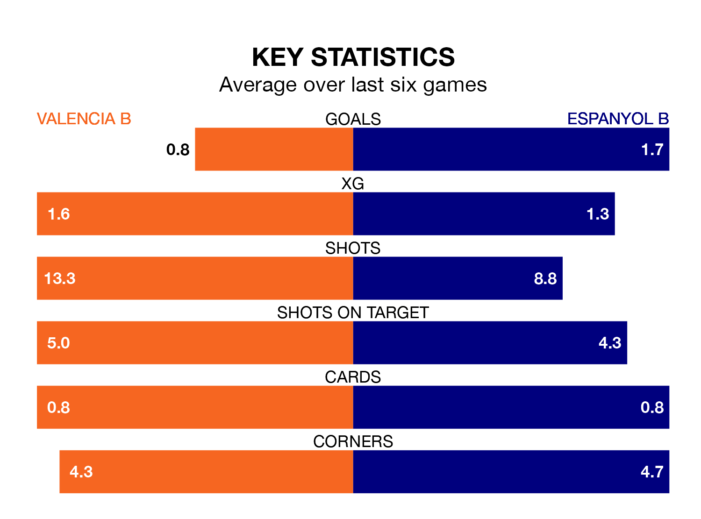

Espanyol B travel to Valencia B on early Sunday in the Segunda División RFEF Group 3.
The visitors come into the game on the back of a win in their last match, having beaten Lleida Esportiu 3-1 at home, with two goals from Kenneth Soler Fernández and one from Bashiru Mohammed.
Valencia B, meanwhile, drew their last match, 0-0 against Hércules CF.
In the last 10 years, Valencia B and Espanyol B have played each other on 16 occasions. Valencia B won five of them, Espanyol B four, and they drew seven times.
On average, Valencia B scored 1.4 goals and Espanyol B 1.1 in those matches.
Their last meeting was on November 5, when they played out a 1-1 draw.
With 32 goals in 26 games so far this season, Espanyol B are scoring at the league's average rate with 1.2 goals per game. And they are conceding fewer than average, letting in 29 goals at a rate of 1.1 per game.
Valencia B are also average scorers, with 1.2 goals per game. They have conceded 1.1 goals per game.
The hosts are 13th in the table after 25 games, of which they have won eight and drawn seven, earning 31 points.
The away team are seven places ahead of Valencia B in sixth, with 10 wins and eight draws putting them on 38 points.
Valencia B are in mixed form in the Segunda División RFEF Group 3, with three wins and a draw from their last six games.
With four wins and a draw over that period, Espanyol B's form is better – they have taken 13 points from 18, compared to the home side's 10.
Updated: 15:10 (UTC), 15/03/24